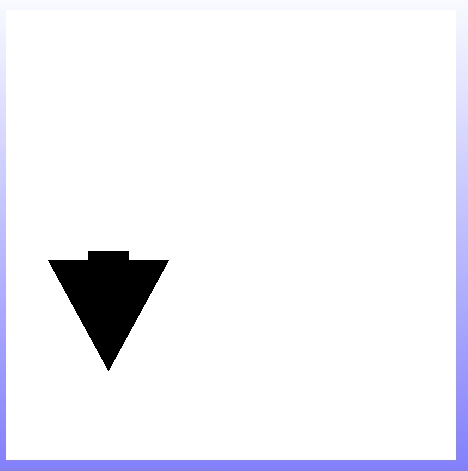

It's time to draw the hint forms for when the user wants to rotate a mirror cell. We'll need arrows with arcs. Once again we'll use a workspace for experimenting with drawing our forms. The goal will be to draw this:
In a workspace we'll create this arrow one step at a time. We begin with a larger final output form because of the arc. And we'll tighten up the arrow dimensions but similar to how we drew the south arrows before. Note that we don't want much of any "stem" on our arrow.
Here's our new arrow.
The Arc class draws arcs by quadrant. Not as nice as we would like but we can make this work. Here's the code for the first part of our outside arc.
And the drawing.
Let's draw the rest of the outside arc and the inside arc pieces.
And the drawing. Notice that we are clipped on the right side because of the size of our output form. That's not an issue. The final form will have even less of a complete arc on the right half.
Let's draw a line that cuts the arc off.

Here's how it turned out.
Now that our arc is enclosed we can fill it in.
Okay. We don't need the line anymore, it was there to close off the arc so we could fill in the black area. The easiest way to erase the line is to draw over it with a white line. However if we make the line really wide it will erase the remaining arc segments too.
And there's our curved arrow.
That's the counter-clockwise arrow. It might be a simple matter to make a clockwise one. All we have to do is add a step to flip the final form.